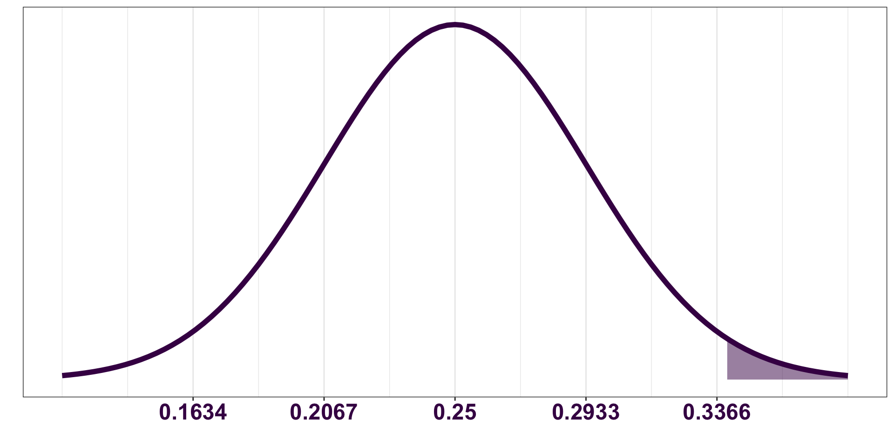
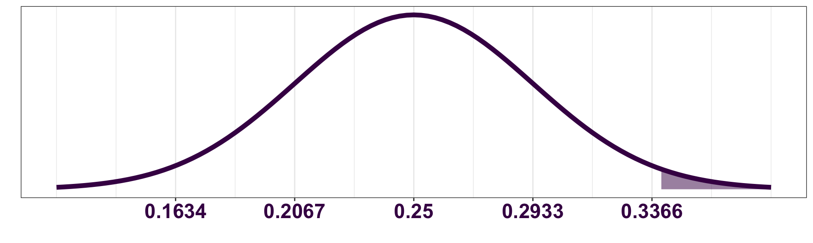
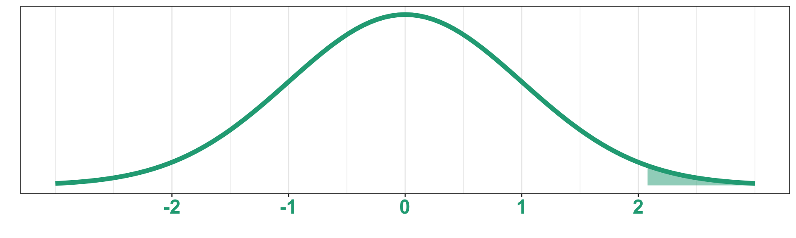
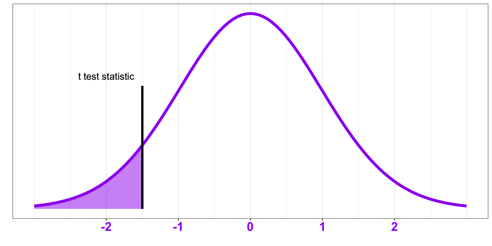
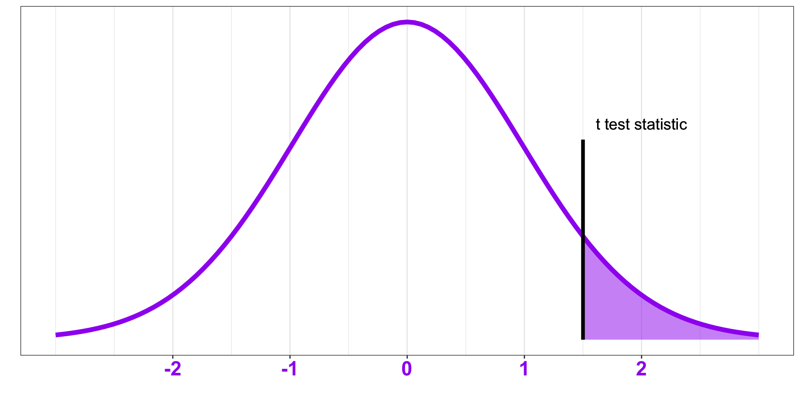
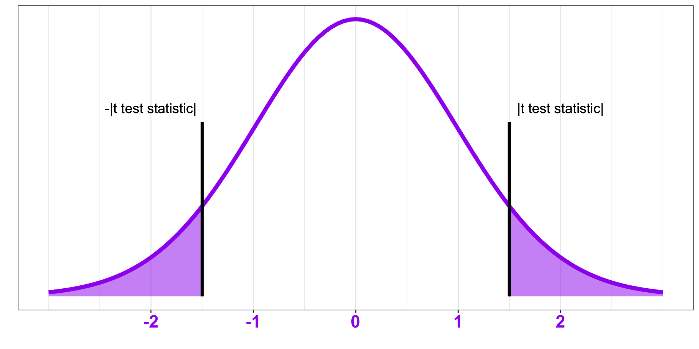
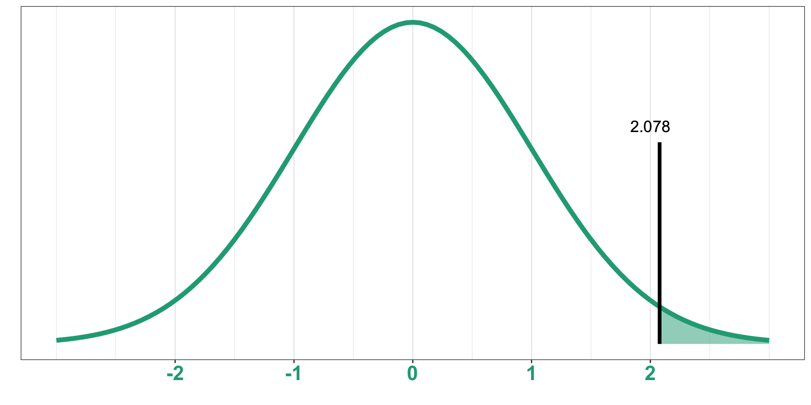
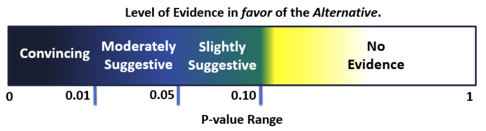

01:30
Topic 6 - Intro to Hypothesis Testing
Motivating Example
Consider the Mario Kart example from your pre-lecture assignment:
In your edition of Mario Kart there are four different cups you can race in:
üçÑ Mushroom Cup
üåª Flower Cup
⭐ Star Cup
üëë Special Cup
Each round, you and your friends randomly generate the cup to race in. After a handful of rounds, you’re frustrated. It seems like the random generator is picking the Special Cup more often than the other three.
If the random generator is picking the cups uniformly (e.g. each cup has the same probability of being selected), what proportion of the 100 rounds do you expect to be played in the Special Cup?
\[ p = 0.25 \]
Motivating Example - The Sampling Distribution
You decide to set up an experiment, playing 100 rounds of Mario Kart, to test whether the generator is choosing the Special Cup more often than the other three cups. You use the random generator to determine how many rounds should be played in each cup.
According to the Central Limit Theorem, if \(p=0.25\), what is the sampling distribution of the sample proportion, \(\hat{p}\), of rounds played in the Special Cup out of the 100 total rounds played?
\(\hat{p} \sim\) \(N\) \(\bigg(\) \(0.25\), \(\sqrt{\frac{0.25(1-0.25)}{100}}\)\(\bigg)\)

Motivating Example - The Sample
Use the Mario Kart Cup Generator to generate the number of rounds played in each cup.
What is the point estimate for the true proportion of times the Special Cup is chosen?
\[\hat{p} = \]
Motivating Example - The Probability
If the true (theoretical) proportion of times the Special Cup is chosen is \(p=0.25\), what is the probability that we would observe a sample proportion at least as large as what we generated?

Motivating Example - The Standardized Distribution


R code:
Motivating Example - The Conclusion
The previous result tells us that the probability that we would have selected the Special Cup at least _____ times out of 100 rounds, if the true proportion of rounds that would theoretically be played in the Special Cup is only 0.25, is _____.
This means there is a ________ chance that the random generator would have selected the Special Cup _____ or more times if the true population proportion is only 0.25.
Based on this result, do you think it seems reasonable to conclude that the random generator is selecting cups (mushroom, flower, star, and special) in equal proportions?
Formal Hypothesis Testing Procedure
Hypothesis Testing Procedure
Steps
Step 1. Identify the question and parameter of interest.
Step 2. Set up the null and alternative hypotheses.
Mario Kart Example
Is the proportion of rounds played in the Special Cup greater than 0.25?
The Hypotheses
The Null Hypothesis
Establishes the claim.
Is assumed to be the truth when performing a hypothesis test.
Is always a statement of equality.
Denoted \(H_0\)
The Alternative Hypothesis
Reflects the question of interest.
Contradicts the null hypothesis.
Is one- or two-sided, depending on the question of interest.
Denoted \(H_A\)
The hypotheses are ALWAYS made with respect to the parameter.
One-sided Alternative Hypotheses
Lower one-sided
Question of interest: Is the parameter of interest less than the claimed value?
If testing the population proportion, \(p\): \(H_A: p < p_0\)
where \(p_0\) is the claimed value.
If testing the population mean, \(\mu\): \(H_A: \mu < \mu_0\)
where \(\mu_0\) is the claimed value.
Upper one-sided
Question of interest: Is the parameter of interest greater than the claimed value?
If testing the population proportion, \(p\): \(H_A: p > p_0\)
where \(p_0\) is the claimed value.
If testing the population mean, \(\mu\): \(H_A: \mu > \mu_0\)
where \(\mu_0\) is the claimed value.
Two-sided Alternative Hypotheses
Question of interest: Is the parameter of interest different from (not equal to) the claimed value?
If testing the population proportion, \(p\): \(H_A: p \neq p_0\)
where \(p_0\) is the claimed value.
If testing the population mean, \(\mu\): \(H_A: \mu \neq \mu_0\)
where \(\mu_0\) is the claimed value.
Hypothesis Testing Procedure
Steps
Step 1. Identify the question and parameter of interest.
Step 2. Set up the null and alternative hypotheses.
Step 3. Collect and summarize the data.
Mario Kart Example
Is the proportion of rounds played in the Special Cup greater than 0.25?
01:00
\(H_0: p = 0.25\)
\(H_A: p > 0.25\)
\(\hat{p}=\)
\(n =\)
Hypothesis Testing Procedure
Steps
Step 4. Determine the null distribution. (Don’t forget to check the sample size conditions!)
Mario Kart Example
Null Distribution
The null distribution refers to the sampling distribution of the standardized point estimate under the null hypothesis.
“Under the null hypothesis” is equivalent to saying “assuming the null hypothesis is true.”
When testing the population proportion, \(p\),
the standardized point estimate is \(z=\frac{\hat{p}-p_0}{\sqrt{\frac{p_0(1-p_0)}{n}}}\).
If the sample size is sufficiently large, the null distribution of this random variable is\(N(0,1)\).
When testing the population mean, \(\mu\),
the standardized point estimate is \(t=\frac{\overline{x}-\mu_0}{\frac{s}{\sqrt{n}}}\).
If the sample size is sufficiently large, the null distribution of this random variable is a \(t\) distribution with \(n-1\) degrees of freedom.
We check the sample size conditions in the same we did for applying
the Central Limit Theorem!
Hypothesis Testing Procedure
Steps
Mario Kart Example
Step 4. Determine the null distribution. (Don’t forget to check the sample size conditions!)
The null distribution of \(\frac{\hat{p}-0.25}{\sqrt{\frac{0.25(1-0.25)}{n}}}\) is \(N(0,1)\).
Sketch the distribution!
Step 5. Calculate the test statistic.
The Test Statistic
The test statistic compares the observed sampled statistic to the hypothesized value while accounting for sampling variability.
General form a test statistic: \(\frac{\text{point estimate - hypothesized value}}{\text{standard error estimate of the point estimate}}\)
When testing the population proportion, \(p\), the test statistic is
\[z = \frac{\hat{p}-p_0}{\sqrt{\frac{p_0(1-p_0)}{n}}}\]
When testing the population mean, \(\mu\), the test statistic is
\[t = \frac{\overline{x}-\mu_0}{\frac{s}{\sqrt{n}}}\]
Hypothesis Testing Procedure
Steps
Mario Kart Example
Step 4. Determine the null distribution. (Don’t forget to check the sample size conditions!)
The null distribution of \(\frac{\hat{p}-0.25}{\sqrt{\frac{0.25(1-0.25)}{n}}}\) is \(N(0,1)\).

Step 5. Calculate the test statistic.
Step 6. Calculate the p-value using the test statistic and null distribution.
The p-value
The p-value is the probability of observing data as or more extreme than our current dataset according to the alternative hypothesis, if the null hypothesis were true.
The p-value when testing \(p\)
Lower one-sided:
\(H_A: p<p_0\)
Upper one-sided:
\(H_A: p>p_0\)
Two-sided:
\(H_A: p\neq p_0\)



R code:
pnorm(z)
R code:
1-pnorm(z)
R code:
2*(1-pnorm(abs(z)))
The p-value when testing \(\mu\)
Lower one-sided:
\(H_A: \mu<\mu_0\)
Upper one-sided:
\(H_A: \mu>\mu_0\)
Two-sided:
\(H_A: \mu\neq \mu_0\)



R code:
pt(t, df)
R code:
1-pt(t, df))
R code:
2*(1-pt(abs(t), df))
Hypothesis Testing Procedure
Steps
Mario Kart Example
Step 4. Determine the null distribution. (Don’t forget to check the sample size conditions!)
The null distribution of \(\frac{\hat{p}-0.25}{\sqrt{\frac{0.25(1-0.25)}{n}}}\) is \(N(0,1)\).
Step 5. Calculate the test statistic.
Step 6. Calculate the p-value using the test statistic and null distribution.

R code:
Steps in Performing a Hypothesis Test
Mario Kart Example
Step 7. Write a conclusion in the context of the problem.
Conclusion
Decisions based on a significance level
How do we decide if our p-value is small enough to say whether or not we think the null hypothesis is reasonable?
- Typically, we will compare our p-value to a predetermined significance level, \(\alpha\)
- \(\alpha=0.05\) is the most commonly used threshold (although not the only option)
- The significance level represents the largest p-value that would suggest the point estimate was not simply due to random chance under the null hypothesis
If p-value \(< \alpha\) then we will reject the null hypothesis.
If p-value \(> \alpha\) then we will fail to reject the null hypothesis.
When designing a study the significance level should be determined before collecting any data.
Conclusion
A statement in terms of the alternative hypothesis
- Using terms like “reject” and “fail to reject the null” may be confusing to novice readers.
- We’ll provide a more complete conclusion by providing a statement of evidence in terms of the alternative hypothesis that reflects the question of interest.

Conclusion
The four-part conclusion
A good conclusion must have context and should include the following four important pieces:
Whether to reject or fail to reject the null hypothesis.
A statement for the strength of evidence in favor the alternative hypothesis.
A \((1-\alpha)100\%\) confidence interval estimate for the parameter of interest.
The point estimate for the parameter of interest.
Hypothesis Testing Procedure
Steps
Mario Kart Example
Step 7. Write a conclusion in the context of the problem.
At the \(\alpha = 0.05\) significance level, we _________________ the null hypothesis.
There is _____________________________ evidence that the true proportion of times the generator will select the Special Cup is greater than 0.25.
We are 95% confident that the true proportion of times the Special Cup is chosen is between _____ and _____ with a point estimate of _____.
02:00
Hypothesis Testing Decision Errors
When performing a hypothesis test, we are using sampled data to draw a conclusion about the population. It’s possible that our conclusion will be incorrect.
What is the probability of making a Type 1 Error? \(\alpha\), the predetermined significance level
Determining the probability of making a Type 2 Error is not as straight forward. We won’t focus on this. We will focus on…
the fact that Type 1 and Type 2 errors are related.
- Decreasing the chance of making a Type 1 Error (i.e. decreasing \(\alpha\)), will increase the chance of making a Type 2 Error.